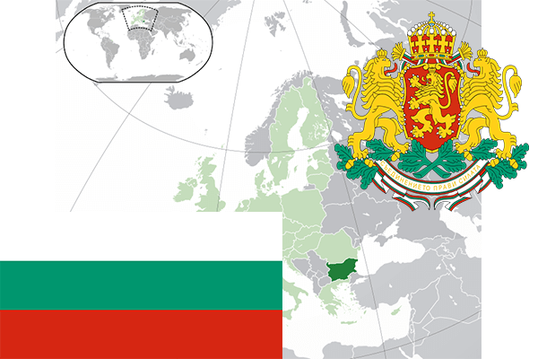

To`liq nomi: Bolgariya Respublikasi
Region: Janubiy-sharqiy Yevropa
Qonunchilik shakli: Respublika
Mustaqillik kuni : 22 sentabr 1908 yil (Ottomon Imperiyadan)
Poytaxti: Sofiya
Maydoni: 110 993,6 km² (dunyoda 103 -o`rinda )
Chegaradosh davlatlari: Malayziya
Aholisi: 7 101 859 (dunyoda 103 -o`rinda ) 2016 -yil roʻyxat
Aholi zichligi: 63,0 /km²
Aholining o`rtacha yoshi: 73,2 yil ( 76,4 ayollar, 70,0 erkaklar)
Rasmiy tili: Bolgar tili
Dini: musulmon va pravoslavlar
Pul birligi: Bolgar levi
Telefon prefiksi: +359
Internet domen: .bg
Xalqaro tashkilotlarga a`zoligi: BMT (1955 –yildan), Yevropa Ittifoqi (2007 yildan)
Dengiz va okeanlarga chiqishi: Qora dengiz
YIM: Butun: $ 101,627 mlrd, Jon boshiga: $ 13 562 (2012 - yil roʻyxati)
Yirik shaharlari: Sofiya, Plovdiv, Varna, Burgas, Ruse, Stara-Zagora